k-Day 131｜以前那些人在想什麼？
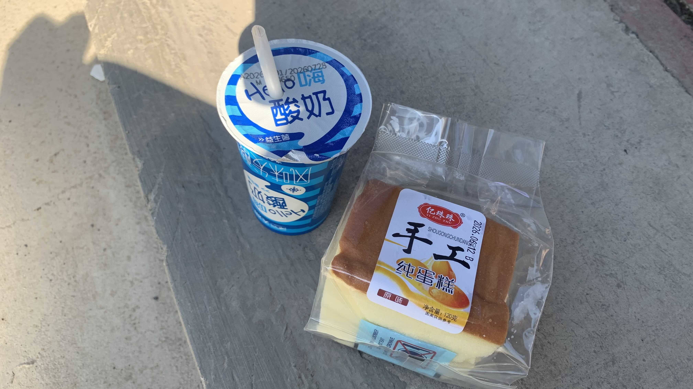
回到昨天的商店，買了一瓶酸奶和雞蛋糕。在中國買到的麵包類食品大部分以食品酒精片防腐，因此麵包本體總有一股濃烈的酒精味，這個雞蛋糕使用的是袋裝防腐劑，值得讚許。
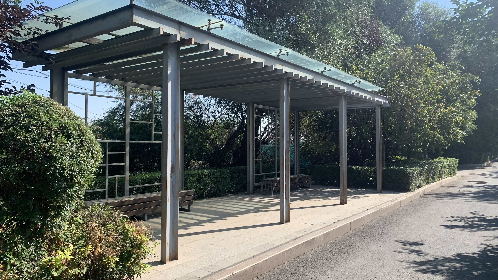
城市旁的自行車道設有不少涼亭，經過時剛好是清潔隊工作時間，地面看來相當乾淨。
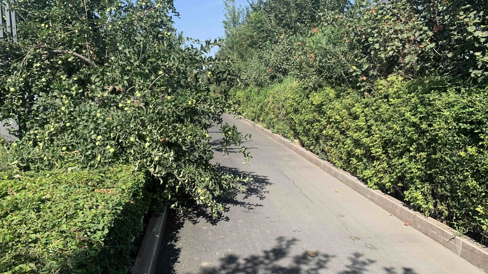
蘋果樹就這樣長出來，想必可以免費抓來吃。
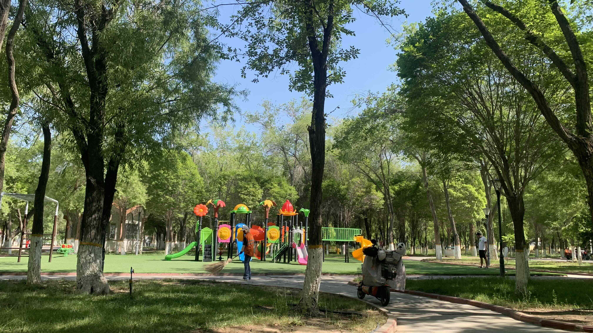
綠化做得相當成功啊，不愧是坐擁天然礦藏的省份，省政府相當富裕吧。
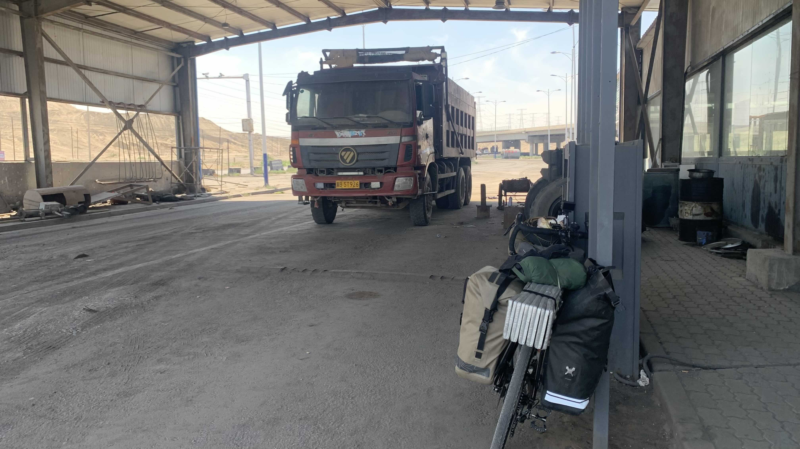
離開市區後，如同超市老闆說的，整段路完全沒有遮蔭。中午經過一間工廠，推著車到鐵皮下休息。
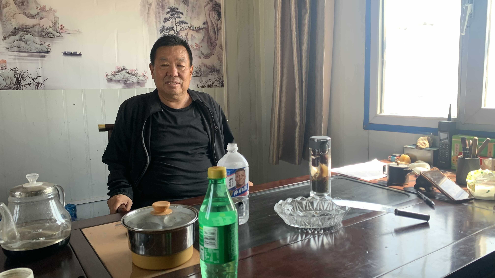
工廠老闆拿車茶杯走出來，於是邀請我到他的辦公室坐坐。
先是吃了桌上的1/4片哈密瓜，聽說就是工廠後面種出來的。吃完哈密瓜，老闆拿出冰箱裡的雪碧遞給我，說幫我加點水吧，又開始燒起熱水。
「我看你是一邊旅行一邊做研究的吧？我以前也是像你這樣，到一個地方先感受當地的文化，觀察那裡的人喜歡做什麼工作。以前一個月可以賺幾十萬的。」老闆一邊泡茶一邊說。
話鋒一轉，又走到兩岸議題上。老闆很討厭邱議瑩，但是王世堅算是有話直說的類型，沈伯陽是家裡在中國有生意的，館長為人最實在。這一串名字說下來，老闆怕不是每天花十幾小時追蹤台灣新聞吧？
不想重複太多兩岸話題，幾乎每天都會被問到，開啟話題的流程和內容幾乎一模一樣，大致包括：「你們台灣人對於統一有什麼想法？」、「其實台灣那麼小，一個新疆就比整個台灣大得多」、「就快把你們打下來」、「打下台灣是分分鐘的事」。不過今天老闆提到幾句我想記錄下來的話：
「其實要是我我也想獨立，獨立出來自己做，這是人之常情。」
「人民都是一樣的，真的打起來，沒有人會想出來，誰當領導他都是過好生活就行。」說到「誰讓人民賺錢，誰就是好政府」的時候，老闆露出心照不宣的笑容。
這時候我應該要點個頭哈哈一笑，灌兩口雪碧說我該出發了。卻不知為何聽到這句話的時候腦中有些困惑，好像我從來沒想過的回憶被喚醒了。
「也不一定是這樣吧，人如果遇到需要守護的事，還是會努力的。」我不太確定當時說的原句是什麼。只是一邊困惑著，一邊說出類似的話，語氣裡可能有些懷疑。
「不可能。」老闆堅定打斷我「要是有人反抗，先殺一批人，後面就沒人敢再反抗了，歷史就是這樣告訴我們的。」
我的臉色有點凝重，老闆也不說話，沈默了一分鐘左右，他說要出去工作，而我也起身出發。
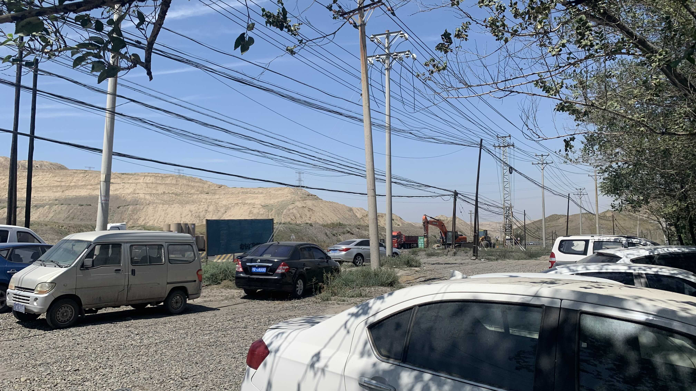
離開工廠，騎了一小段上坡，肚子突然異常疼痛，趕緊蹲在山上的工廠停車區縮起身體。在手機上看到一公里下坡處有間加油站，冒著冷汗衝下山，感恩加油站。
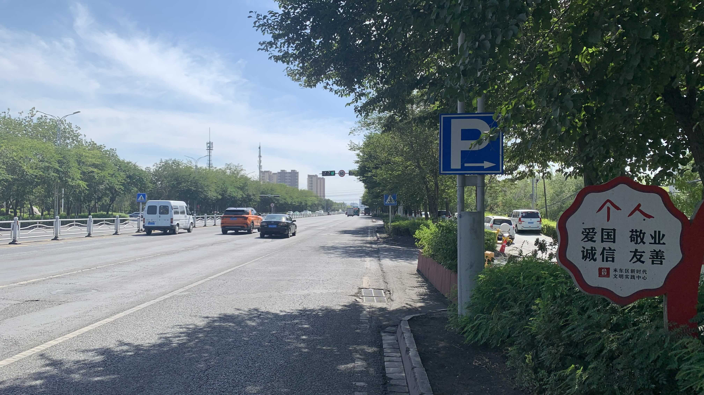
進入城區後行道樹又出現了，路變得很爛，跟台北一樣坑坑洞洞。
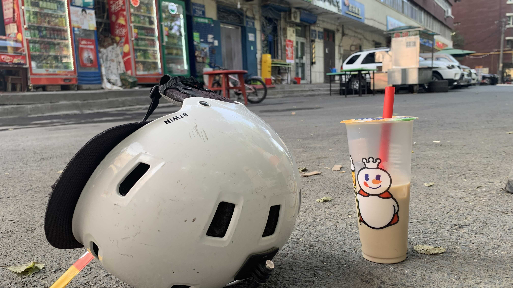
找了一間最近的蜜雪冰城，本來想蹭冷氣，卻沒有室內座位，很自然地坐在人行道旁的樹下休息。
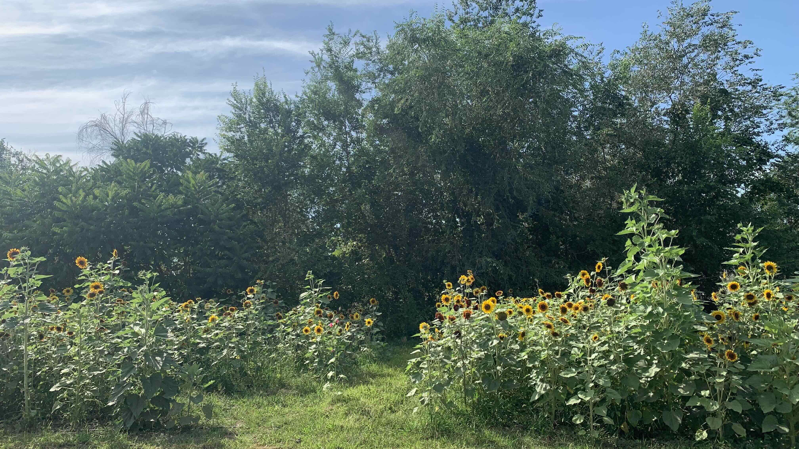
烏魯木齊的人行道上種滿各式花卉，陽光下最耀眼的還是向日葵。
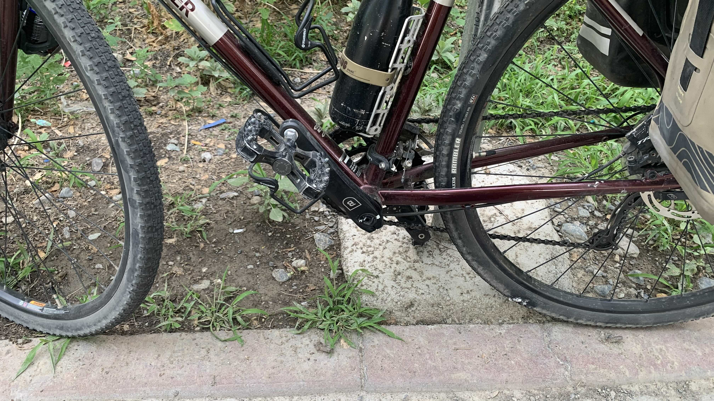
老實說自從進城後輪胎越來越軟塌，感覺是刺到什麼尖銳細小的東西，前後輪都在慢慢消氣。騎得有點艱辛，決定在不遠處訂一間青旅，明日再到車行檢查。
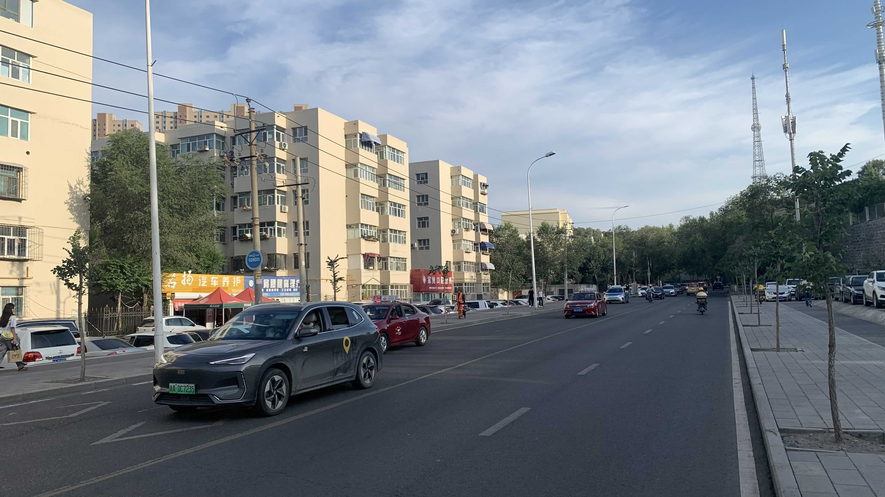
烏魯木齊和台北頗相似，剛剛經過一座天橋四周都是小餐廳和人群，心想：「這裡怎麼和榮總那麼像。」眼前就出現一間醫院。
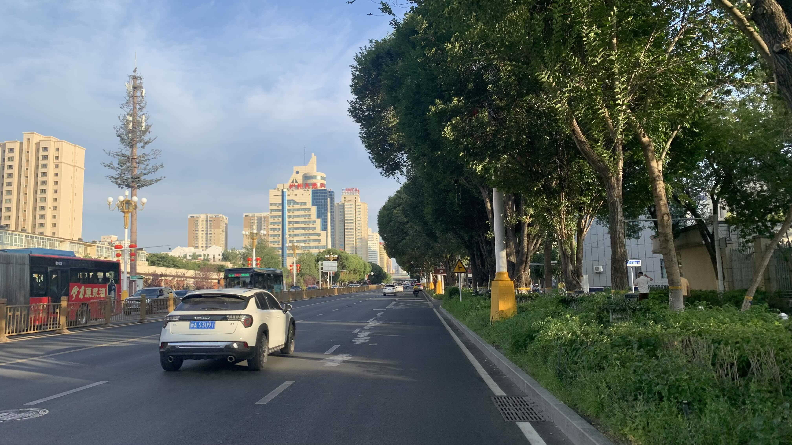
青旅位在小巷子裡，巷子和師大路的巷子有一樣的建築和鐵門。陽台有露營椅可以坐著吹風。
回想了一下下午和工廠老闆的談話，突然意識到，他說的歷史確實向他證明了人民的反抗是可以靠殺靠買平息的，但是台灣以前呢？以前那些人究竟為什麼在毫無希望的歲月裡選擇成為台灣人？他們在想什麼？
我從來沒有用這個角度想過這段歷史。
今日花費： 早餐 16.5、7、蜜雪冰城 8、飲料 16.5、晚餐 47、住宿 114（2晚）元